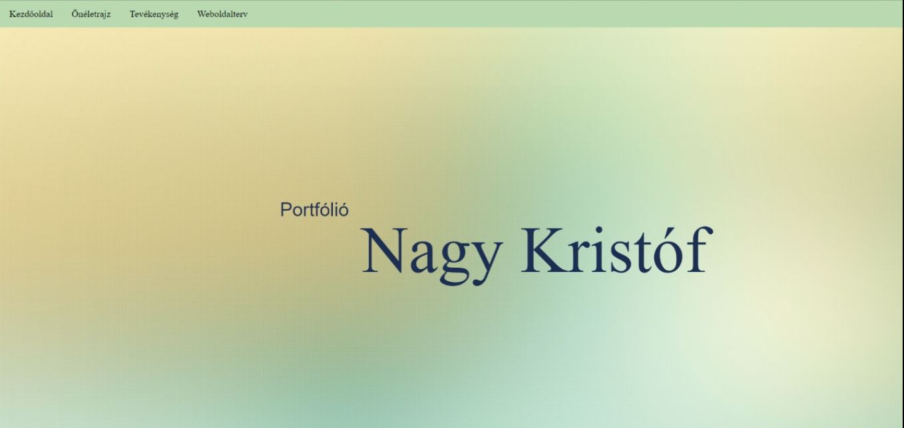
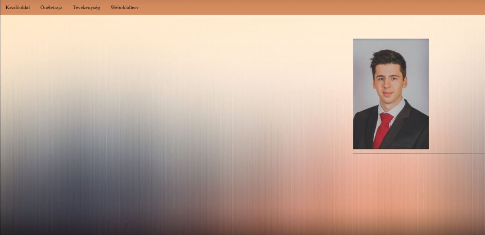
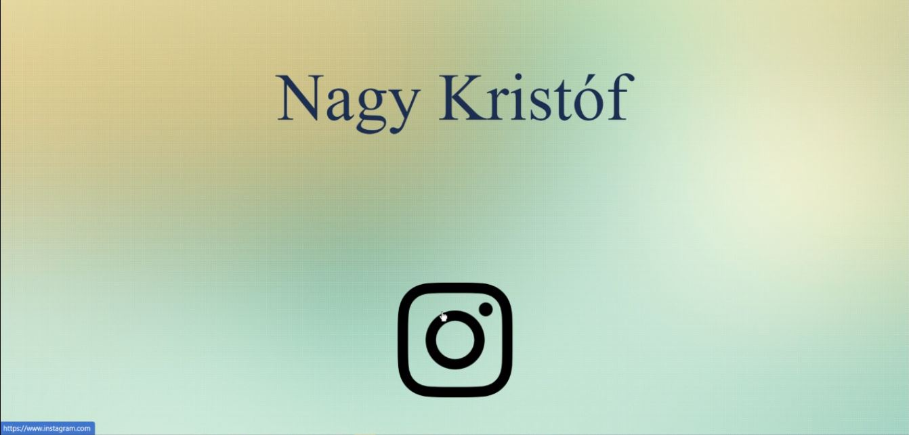
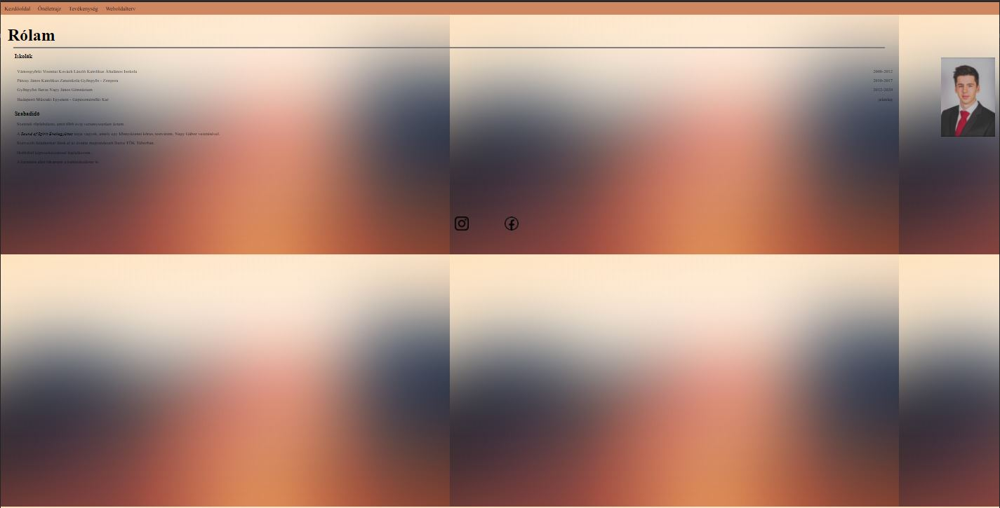

Megilletődve álltam neki a weboldalkészítésnek, mivel még soha nem foglalkoztam hasonlóval. Igyekeztem inspirációt meríteni azokból az oldalakból, amiket Nánási Tanár Úr példaként ajánlott, és valami látványos, mégis a limitált tudáskészletem által megvalósíthatót készíteni.
A legnagyobb nehézséget a CSS használata okozta, gyakran a különböző parancsok semmit nem változtattak a kinézeten, így nem igazán értettem, pontosan mit kellene használni. A szintaxis megszokása is sok ideig tartott.
További nehzséget jelentett a háttér beállítása, hogy valamennyire esztétikus legyen ki-zoomolva is
|  |  |
|  |  |